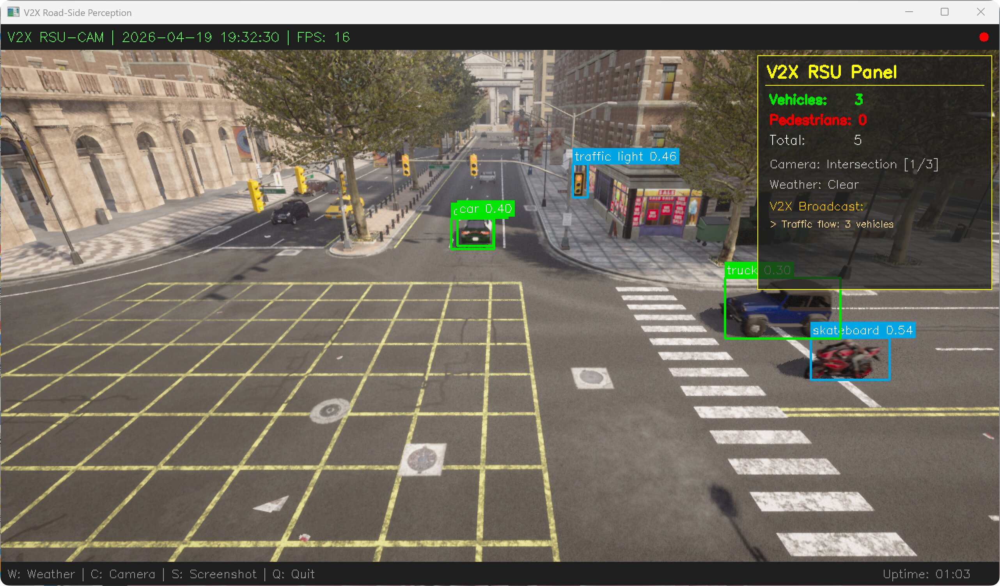
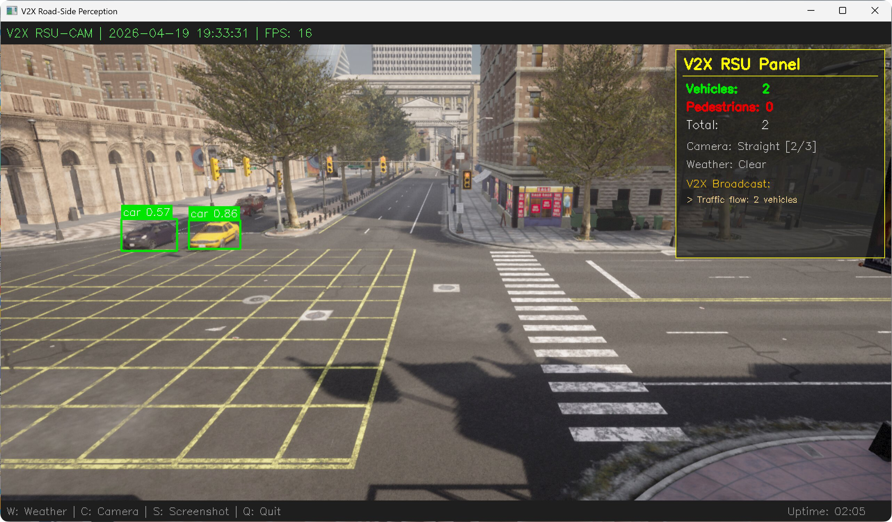
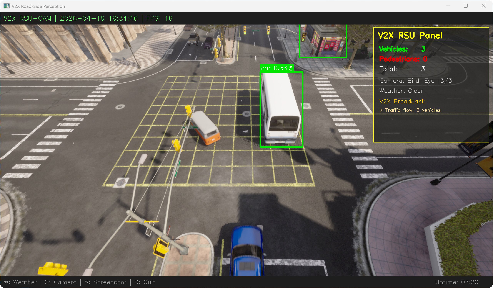
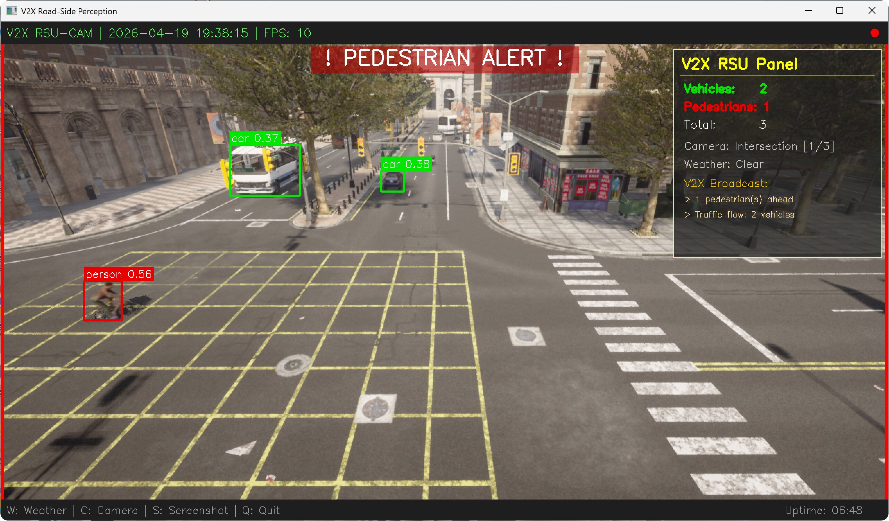
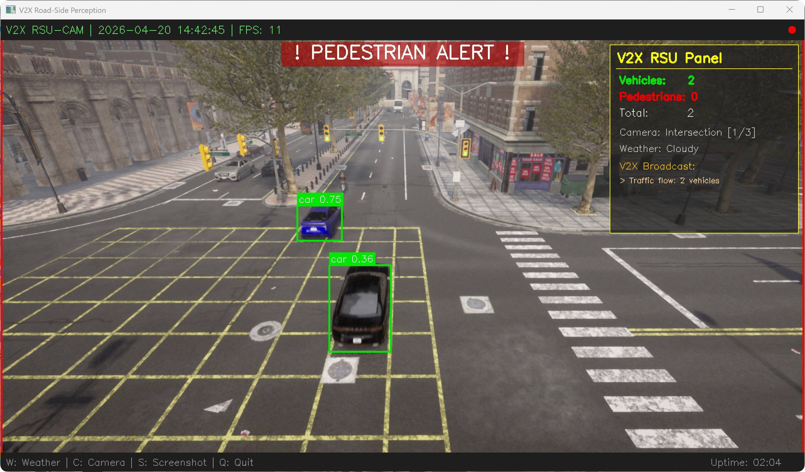
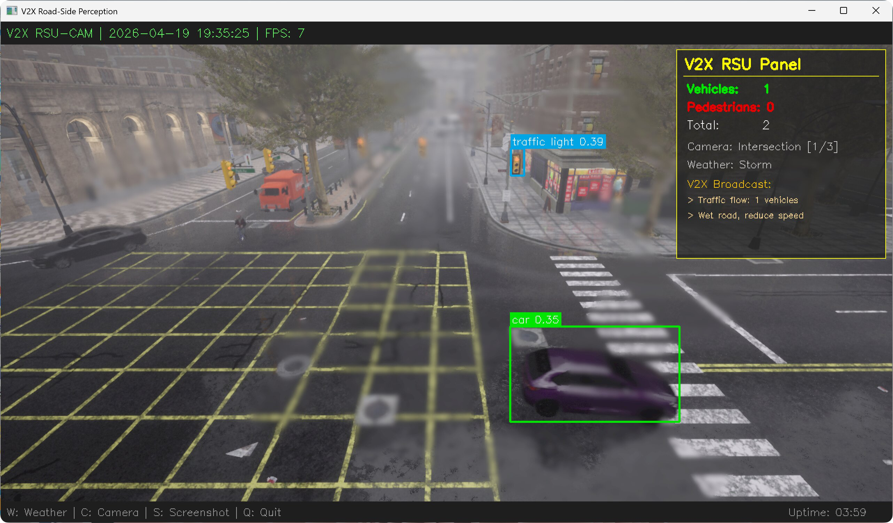
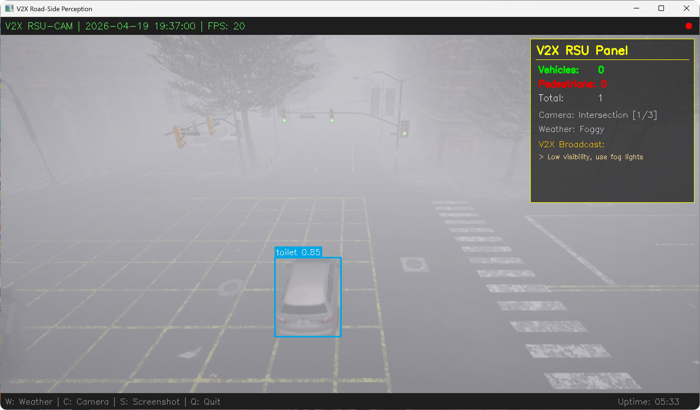
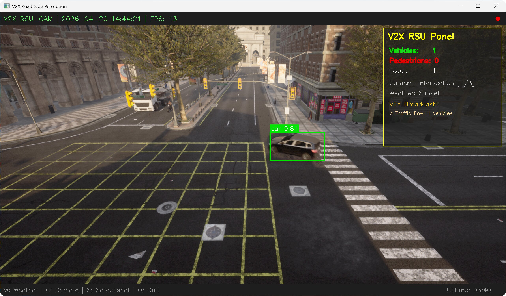
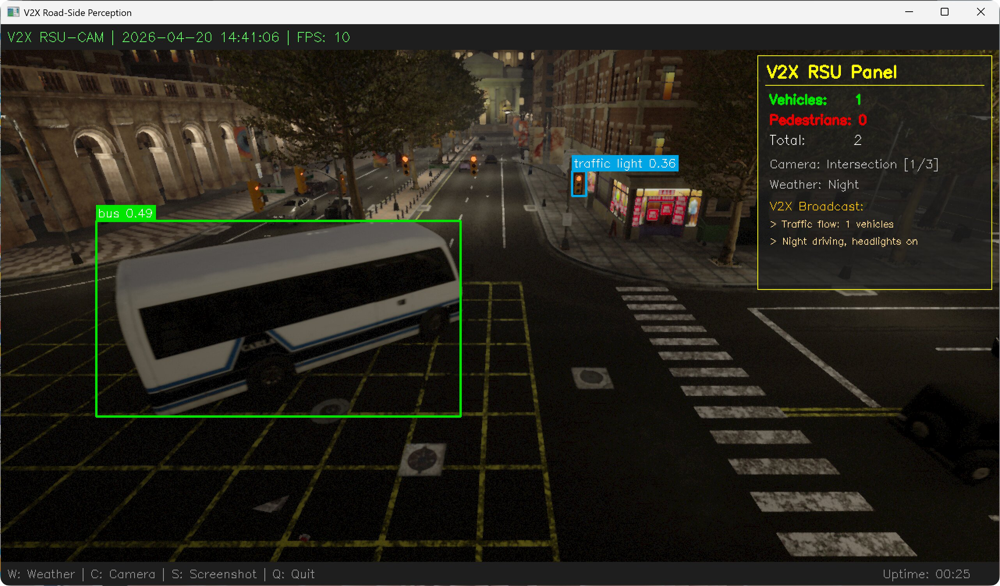

基于 YOLOv8n 的 V2X 路侧智能感知系统优化与实现
1. 项目背景与优化动机
1.1 功能定位
V2X（Vehicle-to-Everything）路侧感知是智能交通系统的核心基础设施之一，edge_intelligence_V2X 模块作为路侧边缘计算节点的感知组件，承担着 "实时检测道路上的车辆与行人、生成交通态势信息、通过 V2X 通信向周围车辆广播预警消息" 的关键职责，直接影响交通安全与通行效率。
本次优化的 edge_intelligence_V2X 模块，来自 OpenHUTB/nn 开源项目，面向智慧交通、车路协同、自动驾驶仿真等应用场景。
1.1.1 模块在整个系统中的位置
在 V2X 车路协同技术栈中，本模块属于路侧感知层的核心视觉任务：
- 上游：路侧摄像头视频流采集（CARLA 仿真器模拟）
- 本模块：目标检测（车辆/行人/交通标志）、态势分析、预警生成
- 下游：V2X 消息广播、交通信号控制、车辆路径规划、交通管理平台
路侧感知是车路协同的 "眼睛"，是实现超视距感知、盲区预警、交通态势共享的第一步。
1.1.2 路侧感知的核心任务
edge_intelligence_V2X 模块主要完成以下关键工作：
- 目标检测 — 从路侧摄像头画面中实时检测车辆、行人、交通标志等目标，输出类别、位置、置信度
- 交通态势分析 — 统计当前路段的车辆密度、行人数量，判断交通拥堵程度
- V2X 预警广播 — 根据检测结果和天气条件，生成预警消息（行人闯入、交通拥堵、恶劣天气提醒等）
- 多场景适应 — 支持不同天气（晴/雨/雾/夜）和不同摄像头视角下的稳定检测
1.1.3 应用场景与重要性
- 智慧路口：路侧感知单元实时监测路口交通状况，向接近车辆推送预警信息
- 车路协同：弥补单车感知盲区，提供超视距感知能力，提升交通安全
- 自动驾驶仿真：在 CARLA 仿真环境中验证 V2X 感知算法的有效性
- 交通管理：实时监测车流量与行人密度，辅助交通信号优化与调度
1.1.4 原模块设计缺陷
原项目更偏向概念演示与原型验证，在工程可运行性、版本兼容性和结果一致性方面仍有较大优化空间。
1.2 优化动机
在实际测试中，原 edge_intelligence_V2X 模块主要有三方面可提升点：
检测逻辑由演示模式升级为模型推理模式
原代码使用 sin/cos 数学函数模拟检测结果（simulate_detection()），检测框位置随时间做周期运动。本次将其升级为 YOLOv8n 的真实目标检测推理流程。
# 原始代码 v2xEdgeYolov7Light2.py 中的假检测（已废弃）
def simulate_detection(image):
"""模拟检测框（随画面动态刷新）"""
h, w = image.shape[:2]
t = time.time() % 10
offset_x = int(np.sin(t) * 10)
offset_y = int(np.cos(t) * 5)
boxes = [
[w//4 + offset_x, h//4 + offset_y, w//3 + offset_x, h//3 + offset_y],
[w//2 - offset_x, h//2 - offset_y, w//1.5 - offset_x, h//1.5 - offset_y],
]
return np.array(boxes)
主程序依赖需要工程化梳理
原 src/main.py 依赖 tools.pygame_display 和 tools.plotter_x，在当前仓库结构下缺少对应模块，运行时会出现 ImportError，因此本次采用独立入口文件重构运行链路：
# 原始 src/main.py 中缺失的依赖导入
from tools.pygame_display import PygameDisplay # 模块不存在
from tools.plotter_x import Plotter # 模块不存在
环境版本需要统一到当前实验环境
原代码硬编码了 CARLA 0.9.10 的 .egg 路径，本次统一适配到当前使用的 CARLA 0.9.16 环境：
# 原始代码中硬编码的旧版路径
CARLA_EGG_PATH = r"D:\WindowsNoEditor\PythonAPI\carla\dist\carla-0.9.10-py3.7-win-amd64.egg"
基于以上改进点，本次优化的核心目标是：将原型化演示版本升级为可运行、可复现实验结果的 V2X 路侧感知系统。
2. 核心技术栈与理论基础
2.1 核心技术栈
| 技术 / 工具 | 用途 |
|---|---|
| Python 3.12 | 核心开发语言 |
| CARLA 0.9.16 | 自动驾驶仿真平台，提供真实感渲染的交通场景 |
| YOLOv8n (Ultralytics) | 轻量级实时目标检测模型，COCO 80 类预训练 |
| OpenCV 4.x | 图像处理、检测框绘制、视频显示、截图保存 |
| NumPy | 图像数据转换与数值计算 |
2.2 核心理论基础
2.2.1 系统整体流程
CARLA 仿真场景 → 路侧摄像头采集 → YOLOv8n 目标检测 → 分类统计 → V2X 态势分析 → 预警消息生成 → HUD 面板可视化显示
2.2.2 关键技术原理
YOLOv8n 实时目标检测
YOLOv8 是 Ultralytics 推出的最新一代 YOLO 系列模型。本项目采用 YOLOv8n（nano 版本），具有以下特点：
- 参数量仅 3.2M，推理速度快，适合边缘部署场景
- 在 COCO 数据集上预训练，可直接检测 80 类常见目标
- 本项目重点关注：
car、truck、bus、motorcycle、bicycle（车辆类）和person（行人类）
隔帧检测策略
为提升系统帧率，采用隔帧检测：每 $N$ 帧运行一次 YOLO 推理，中间帧复用上一次检测结果：
其中 $N = 2$。在当前测试环境下可观察到帧率提升，具体增益会随硬件性能、交通密度和天气场景变化。
V2X 路侧单元 (RSU) 信息融合
路侧单元综合检测结果与环境信息，生成多类 V2X 预警广播：
| 触发条件 | 预警类型 | 广播消息 |
|---|---|---|
| 检测到行人 | 行人预警 | Pedestrian(s) ahead |
| 车辆数 > 5 | 交通拥堵 | Heavy traffic: N vehicles |
| 雨天/暴风天气 | 路面预警 | Wet road, reduce speed |
| 大雾天气 | 能见度预警 | Low visibility, use fog lights |
| 夜间场景 | 照明提醒 | Night driving, headlights on |
3. 优化整体思路
本次改进围绕运行稳定性、结果可观测性和实验复现性展开，对原有运行链路进行了整理，并将演示型检测流程替换为基于模型推理的实现。
3.1 优化总体原则
- 使用 YOLOv8n 预训练模型替换原有演示型检测逻辑
- 保持轻量化实现，避免引入额外训练流程和复杂依赖
- 简化运行入口，降低环境配置和复现实验的成本
- 保留必要的可视化与交互功能，便于演示、观察和调试
3.2 整体技术路线
| 层次 | 原版本问题 | 优化方案 |
|---|---|---|
| 检测引擎 | 演示型模拟框输出 | YOLOv8n 真实推理 |
| 运行环境 | 依赖链路不完整 | 全新 main.py，形成独立可运行入口 |
| CARLA 版本 | 硬编码 0.9.10 | 适配 0.9.16，同步模式 |
| 摄像头 | 无 | 路侧高处部署，3 种机位可切换 |
| 交通场景 | 交通参与者较少 | 60 辆车 + 30 个行人，优先近处生成 |
| 天气支持 | 无 | 7 种天气预设可切换 |
| V2X 面板 | 无 | 实时统计 + 预警广播 + 监控风格 HUD |
| 安全预警 | 无 | 行人闯入红色边框闪烁报警 |
4. 针对性优化方案与实现
4.1 检测引擎：从假检测到真实 YOLOv8n 推理
改进点： 原代码采用演示型模拟框逻辑，本次切换为基于 YOLOv8n 的真实推理流程。
解决方案： 引入 YOLOv8n 预训练模型，对每一帧进行真实的目标检测推理。
def _load_model(self):
"""加载 YOLOv8n 预训练模型（COCO 80类，自动下载）"""
self.model = YOLO('yolov8n.pt')
def _detect(self, frame):
"""YOLOv8 前向推理（隔帧检测提升帧率）"""
self.tick_count += 1
if self.tick_count % DETECT_INTERVAL == 0 or self.last_detections is None:
results = self.model(frame, verbose=False, conf=YOLO_CONFIDENCE)
self.last_detections = results[0]
return self.last_detections
检测结果按 V2X 关注的类别分类统计：
VEHICLE_CLASSES = {'car', 'truck', 'bus', 'motorcycle', 'bicycle'}
PERSON_CLASSES = {'person'}
每个检测目标用彩色检测框标注：绿色=车辆，红色=行人，橙色=其他。
4.2 多摄像头机位切换
设计目标： 模拟真实路侧感知部署中的多角度监控需求。
系统预设了 3 种摄像头机位，按 C 键可实时切换：
| 机位 | 高度 | 俯仰角 | FOV | 适用场景 |
|---|---|---|---|---|
| Intersection（路口） | 8m | -25° | 100° | 路口车辆/行人监控 |
| Straight（直道） | 6m | -15° | 90° | 直线道路车流监测 |
| Bird-Eye（鸟瞰） | 14m | -50° | 110° | 全局交通态势俯瞰 |
CAMERA_POSITIONS = [
{"name": "Intersection", "fwd": 8.0, "right": 5.0, "z": 8.0, "pitch": -25.0, "fov": 100},
{"name": "Straight", "fwd": 0.0, "right": 8.0, "z": 6.0, "pitch": -15.0, "fov": 90},
{"name": "Bird-Eye", "fwd": 0.0, "right": 0.0, "z": 14.0, "pitch": -50.0, "fov": 110},
]
切换时自动销毁旧摄像头、创建新摄像头，并同步 CARLA 观察者视角：
def _switch_camera_position(self, first_time=False):
if self.camera and self.camera.is_alive:
self.camera.stop()
self.camera.destroy()
pos = CAMERA_POSITIONS[self.cam_index]
# ... 创建新摄像头并注册回调 ...
路口机位（Intersection）： 监控路口车辆通行

直道机位（Straight）： 侧方监测直线车流

鸟瞰机位（Bird-Eye）： 俯瞰全局交通态势

4.3 行人闯入安全报警
设计目标： V2X 路侧感知的核心安全功能——当检测到行人时，立即向驾驶员发出视觉警报。
当检测到行人时，系统触发持续 1.5 秒的红色报警效果：
- 画面边框红色闪烁（频率 4Hz）
- 画面顶部显示居中的
! PEDESTRIAN ALERT !警告文字 - V2X 面板同步广播行人预警消息
def _draw_pedestrian_alert(self, frame):
if time.time() < self.ped_alert_timer:
thickness = 8 if int(time.time() * 4) % 2 == 0 else 4
cv2.rectangle(frame, (0, 0), (CAMERA_WIDTH - 1, CAMERA_HEIGHT - 1),
(0, 0, 255), thickness)
# ... 绘制警告文字 ...

4.4 多天气场景支持
系统内置 7 种天气预设，按 W 键循环切换，V2X 面板自动生成对应的天气预警广播：
| 天气 | 特点 | V2X 预警 |
|---|---|---|
| Clear（晴天） | 能见度好 | 无特殊预警 |
| Cloudy（多云） | 光线偏暗 | 无特殊预警 |
| Rainy（雨天） | 路面湿滑 | Wet road, reduce speed |
| Storm（暴风雨） | 大雨+强风 | Wet road, reduce speed |
| Foggy（大雾） | 能见度极低 | Low visibility, use fog lights |
| Sunset（黄昏） | 逆光干扰 | 无特殊预警 |
| Night（夜晚） | 光照不足 | Night driving, headlights on |
多云天气：

暴风雨天气：

大雾天气：

黄昏场景：

夜晚场景：

4.5 NPC 交通流优化
改进目标： 提高画面中的交通参与者密度，增强可观察性与演示稳定性。
优化方案： 生成 60 辆 NPC 车辆 + 30 个行人，且按与摄像头的距离排序，优先在摄像头附近的路点生成车辆，确保画面中有丰富的检测目标。
def _spawn_traffic(self):
# 按与摄像头的距离排序，优先在附近生成
cam_loc = self.cam_ref_point.location
spawn_points.sort(key=lambda sp: sp.location.distance(cam_loc))
for i in range(min(NPC_VEHICLE_COUNT, len(spawn_points))):
v = self.world.try_spawn_actor(bp, spawn_points[i])
if v:
v.set_autopilot(True, self.tm.get_port())
行人同样自动生成并设置 AI 控制器，随机行走于人行道和路口区域：
walker = self.world.try_spawn_actor(bp, carla.Transform(loc))
if walker:
ctrl = self.world.spawn_actor(controller_bp, carla.Transform(), walker)
ctrl.start()
ctrl.go_to_location(self.world.get_random_location_from_navigation())
ctrl.set_max_speed(random.uniform(1.0, 2.5))
4.6 V2X RSU 信息面板
系统在画面右上角绘制半透明的 V2X 路侧单元信息面板，实时显示：
- 检测统计：车辆数、行人数、总目标数
- 当前摄像头机位和天气信息
- V2X 预警广播消息（根据检测结果和天气动态生成）
画面顶部为监控风格的标题栏，显示时间戳、FPS、录制指示灯；底部为操作提示栏和运行时长。
预警广播消息根据当前检测结果和天气条件动态生成：
def _get_v2x_messages(self):
msgs = []
if self.stats['pedestrians'] > 0:
msgs.append(f"> {self.stats['pedestrians']} pedestrian(s) ahead")
if self.stats['vehicles'] > 5:
msgs.append(f"> Heavy traffic: {self.stats['vehicles']} vehicles")
weather_name = self.weather_presets[self.weather_index][0]
if weather_name in ('Rainy', 'Storm'):
msgs.append("> Wet road, reduce speed")
elif weather_name == 'Foggy':
msgs.append("> Low visibility, use fog lights")
elif weather_name == 'Night':
msgs.append("> Night driving, headlights on")
return msgs if msgs else ["> All clear"]
V2X 面板效果可在下方运行 GIF 和天气截图中观察到。
5. 系统运行效果
5.1 运行环境
| 项目 | 配置 |
|---|---|
| 操作系统 | Windows 11 |
| Python | 3.12.0 |
| CARLA | 0.9.16 |
| ultralytics | 8.4.39 |
| opencv-python | 4.13.0.92 |
5.2 运行方式
# 1. 启动 CARLA 服务器
CarlaUE4.exe
# 2. 安装依赖
pip install carla opencv-python numpy ultralytics
# 3. 运行系统
cd src/edge_intelligence_V2X
python main.py
5.3 按键操作
| 按键 | 功能 |
|---|---|
W |
切换天气场景（7 种循环） |
C |
切换摄像头机位（路口→直道→鸟瞰） |
S |
保存当前画面截图到 results/ 目录 |
Q / ESC |
退出系统 |
5.4 运行效果展示
以下 GIF 展示了系统在运行中的连续效果（机位切换、天气变化、检测框与面板联动）：

6. 功能扩展与未来规划
- 多路摄像头同时工作：从单路切换扩展为多路画面拼接显示，实现路口全方位监控
- 目标追踪：引入 DeepSORT / ByteTrack，对检测到的车辆和行人进行跨帧追踪，统计车流量和行人流量
- 在线学习与自适应：实现在线微调机制，根据当前场景动态调整模型参数，提升检测效果
- V2X 协议集成：接入 SAE J2735 等 V2X 标准协议，实现仿真环境内的消息编码与解码，模拟真实车路协同通信
7. 总结
本次优化主要完成了以下几方面工作：
- 将原有演示型检测逻辑替换为基于 YOLOv8n 的目标检测流程，并补充了类别统计与可视化标注。
- 结合 CARLA 0.9.16 环境重新整理了运行入口，补充了多机位、多天气和交通参与者生成逻辑。
- 增加了行人报警、V2X 面板和运行 GIF 展示，使实验结果更便于观察和说明。
- 补充了依赖说明、运行方式和文档展示内容，便于在课程作业和演示场景中复现。
当前版本已经能够完成单路路侧摄像头场景下的目标检测、基础态势展示和简单预警信息生成，也为后续接入目标追踪、协议栈和多传感器融合预留了扩展空间。